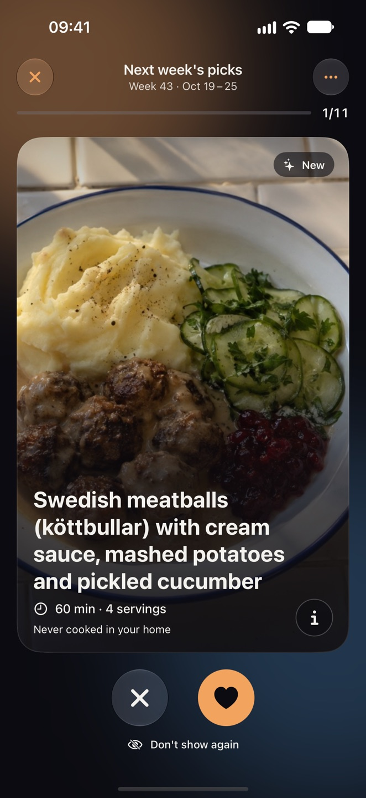
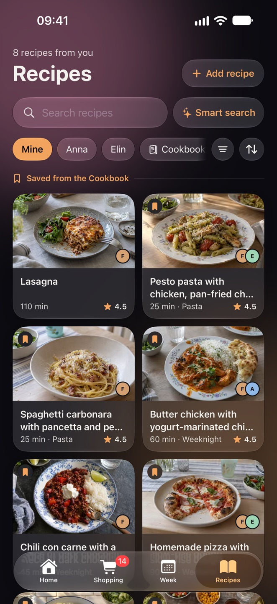
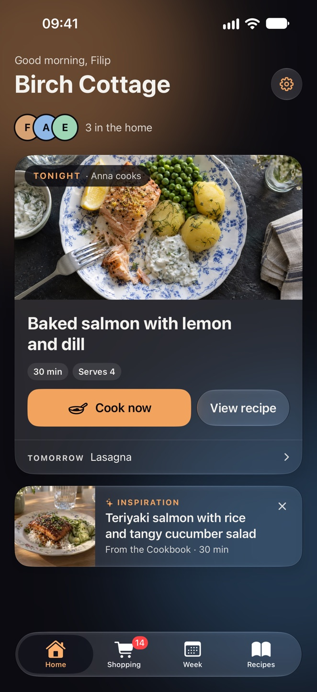
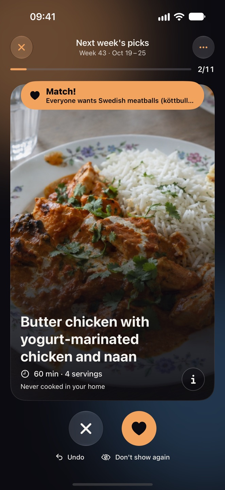

01 · WEEKLY PICKS
Swipe your way to this week's dinners.
Every Thursday the home gets a stack of dishes. Everyone swipes on their own phone, and what you like becomes next week's dinners. It takes about a minute.
Swipe your way to this week's dinners together, share a shopping list that's always right and cook step by step. Matro takes care of the nagging, so you don't have to.



550 dishes in the Cookbook, from Swedish beef stew to pad thai.
No more *“what's* *for* *dinner?”* at five o'clock. You swipe, Matro plans and the list fills itself.
Every Thursday the home gets a stack of dishes. Everyone swipes on their own phone, and what you like becomes next week's dinners. It takes about a minute.
Dinners, lunches, leftovers and who's cooking. Move a day with a drag, and put the whole week's groceries on the list with one tap.
Items are sorted the way the store is laid out and show up for everyone at once. Whoever is in the store checks things off, and it works even when the signal gives out by the freezers.
Paste a link or take a photo of a cookbook page, and the recipe is read in. Change the servings and everything is recalculated, and put the ingredients on the list.
Big text and one thing at a time. If you want it even simpler, the steps are rewritten with a tap, and timers ring even when the phone is locked.
Swipe through a few dishes when you join. What you like ends up among your recipes, and the suggestions learn what the home enjoys.
Say what you avoid, and it is skipped as far as possible.

What you do shows up at once and is sent when the signal is back. The list and the recipes stay on the phone.
Plan the week and browse the recipes on the big screen. Everything syncs with the home's phones.
The summer house, or every other week at Dad's. Be part of several homes and switch with a tap.
Liquid Glass, timers and cooking on the Lock Screen, and Sign in with Apple.
Matro is being tested by friends and family right now. Want to be there from the start? Get in touch at team.app.consortium{at}gmail{dot}com.